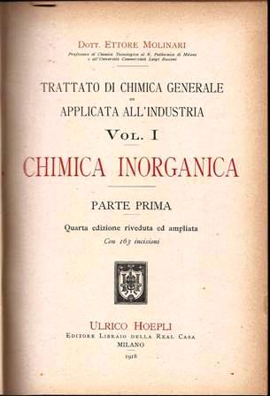

I miei "Molinari" sono rispettivamente del 1918 (Inorganica) e del 1927 (Organica).
Mi capita non di rado di sfogliare queste vecchie pagine ingiallite e per chi ama la chimica (storica) come la presento su questo blog, questi sono dei libri insostituibili.
Il prof. Ettore Molinari morì a soli 59 anni nel 1926 di "angina pectoris", come si diceva allora e commemorato con rimpianto negli ambienti del Politecnico e della chimica milanese in generale.
Da tempo era universalmente noto per il suo "Trattato di Chimica Generale Applicata all'Industria".

Il futuro professore nacque in una numerosissima famiglia a Cremona nel 1867; dopo un periodo a Conegliano (dove fu espulso da scuola per le sue idee irredentiste) si stabilì a Zurigo.
Quel luogo era uno dei centri più vivaci per l'insegnamento della chimica applicata e vi lavoravano allora persone come Meyer (scoprì il tiofene), Lunge (introdusse il metilarancio in titolazione), Treadwell (chi non conosce i suoi libri di analitica?), Heumann (produzione dell'indaco), e tanti altri.
Ettore conseguì la laurea con lode in chimica presso l'Università di Basilea nel 1889, con un lavoro sperimentale sulla "Costituzione dei diazoamidocomposti" sotto la guida di H. Goldschmidt (colui che "inventò" la termite).
Come si vede, la buona compagnia non gli mancava!
Nel 1889, in seguito al fatto singolare di aver ereditato una intera galleria di quadri antichi (!), il neolaureato si trasferì a Parigi al fine di procurarne il miglior ricavo dalla vendita delle opere.
Personaggio eclettico, ebbe così il miglior modo di crearsi nel contempo anche una notevole cultura artistica frequentando i collezionisti ed il mondo intellettuale parigino.
Dopo il soggiorno francese (con i quadri non so come andò a finire) Molinari si trasferì a Londra ove lavorò in un laboratorio analitico e poi nel laboratorio bromatologico di Heidelberg, dove ebbe ancora modo di conoscere il vecchio Bunsen, sempre alle prese col suo "becco" (perdonate la sciocchezza, tutta mia...).
Tornato in Italia accettò il posto di direttore chimico nello stabilimento del grande lanificio Rossi, ed in questo periodo ebbe l'opportunità di venire in contatto pratico coi nuovi rami della nascente industria chimica, che avrebbero facilitato notevolmente i suoi compiti di insegnante e di divulgatore.
Nel 1901, e per una quindicina di anni, il Molinari divenne direttore della Scuola di Chimica di Milano, dove, oltre a lavori di analisi e di consulenze, fece parecchi studi importanti sugli esplosivi (eravamo alle soglie della G.M.).
Questi studi gli valsero nel 1910 la carica di consulente tecnico della Società Italiana Prodotti Esplodenti (la famosa S.I.P.E.), e nel 1915 ne divenne Direttore chimico.
Intanto già da anni si accingeva alla preparazione della sua opera monumentale, il «Trattato di Chimica generale ed applicata all'Industria».
Nel 1904 gli fu conferita anche la cattedra di Chimica merceologica all'Università Bocconi e quasi contemporaneamente ebbe l'incarico dell'insegnamento di Chimica generale al Politecnico di Milano.
Pur non abbandonando l'insegnamento e il lavoro letterario che richiedevano le susseguenti edizioni del suo Trattato, Molinari si dedicò intensamente allo sviluppo della fabbrica di esplosivi di Cengio, vista l'importanza dello stabilimento durante il periodo bellico.
Forse fu l'eccessivo sforzo fisico ed intellettuale a cui il Molinari si sottopose in quei tempi che cominciò a minare la sua salute, costringendolo a ritirarsi in una villetta con podere a Desenzano.
Ma anche nel suo romitaggio gardesano, anzichè coltivare l'orticello tovò il tempo di progettare un impianto per il trattamento con cloro dell'acqua del lago, destinata ad acqua potabile e compì ricerche perfino per l'utilizzazione dei tutoli del granoturco, che diede origine ad una discreta industria chimico-agricola nel Cremonese, assieme ad infinite altre iniziative che la sua mente vulcanica partoriva.
La sua opera capitale e per cui è conosciuto rimane comunque il "Trattato", nei due rami di Chimica Inorganica ed Organica, rispettivamente del 1905 e 1908.
Alle numerose edizioni italiane seguirono quelle nelle principali lingue e perfino in tedesco, il chè costituisce la più concreta attestazione di stima tributata all'opera del Molinari e mette in evidenza la grande reputazione che si era guadagnata anche presso la scienza d'Oltralpe.

I "Molinari" sono dei libroni che si leggono pian piano e con piacere, oggi più di ieri, senza mai dare al lettore quel senso spiacevole di "mi tocca studiare" che danno certi profondissimi ma gelidissimi tomi attuali.